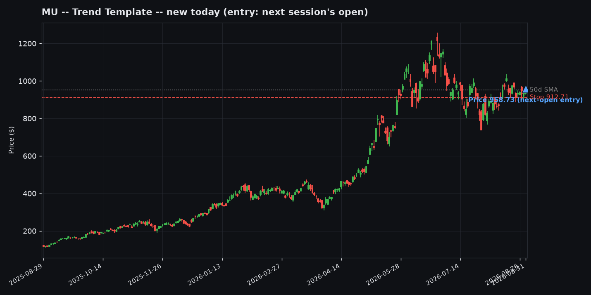
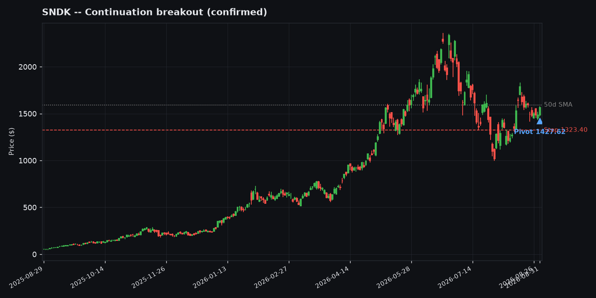
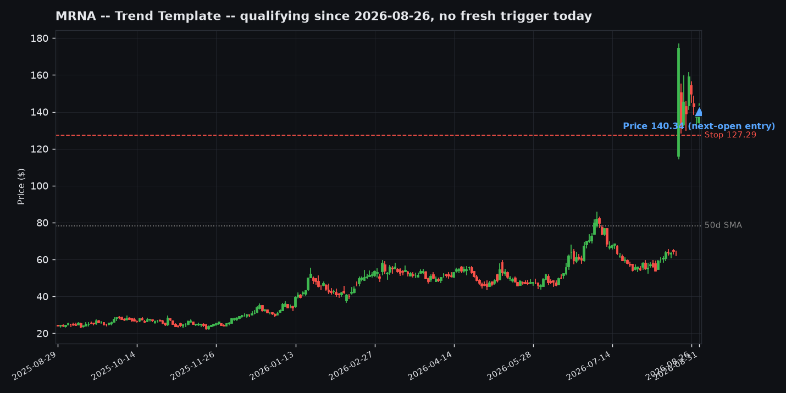
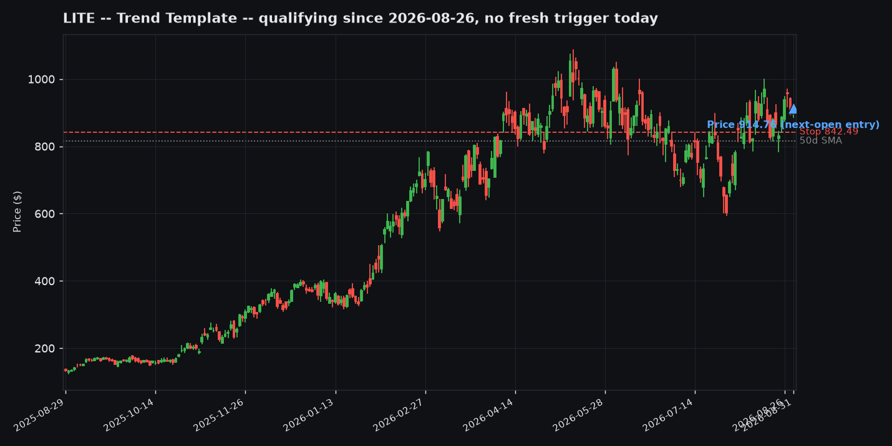
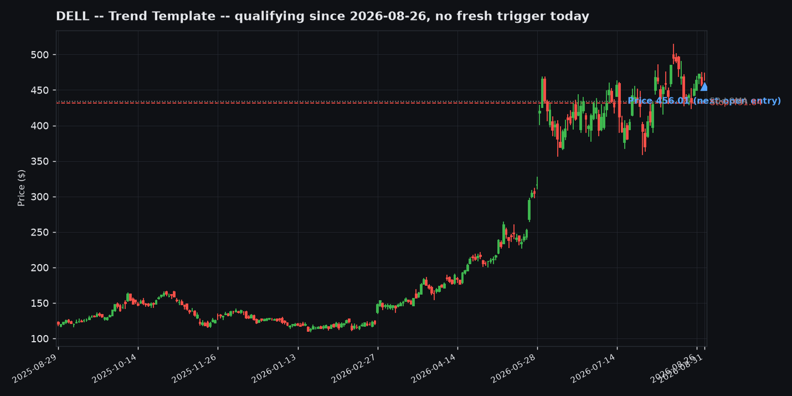
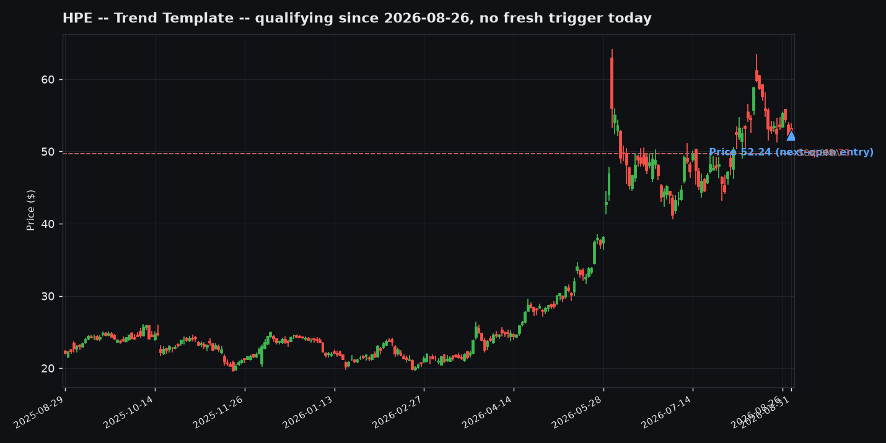
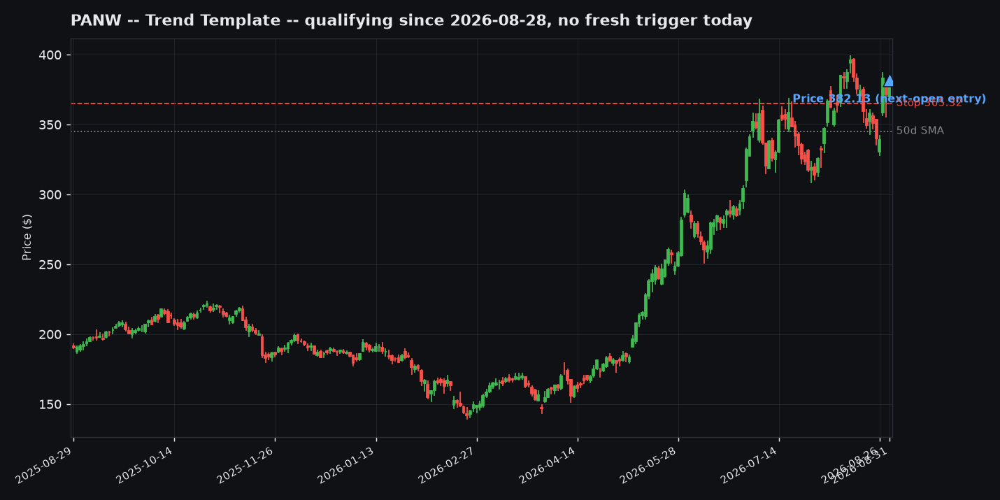
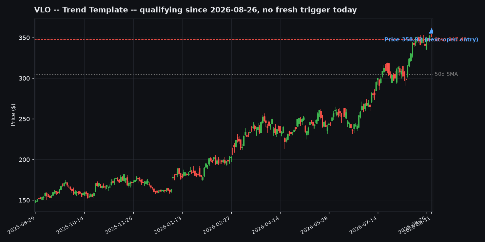

The market is in a defensive posture, with breadth reading 51% of the scanned universe above its 50-day moving average and 6 distribution days in the past month -- an elevated count worth watching. Zooming out, breadth has been deteriorating over the last 60 sessions (-3.5 pt change in % above the 50-day MA) and deteriorating over the last two weeks (-10.3 pt), while SPY is climbing (+4.3% over 60 sessions, -0.1% over the last two weeks). Momentum under the surface is leaning short -- 6 name(s) hit a fresh 52-week high today against 11 breaking down to a fresh 52-week low. Energy is leading, with 71% of its 21 scanned names carrying an RS score of 70+ and 13 clearing a screen outright today, with Health Care also showing real strength. It's being driven by names like VLO, MPC and PSX. With 76 name(s) clearing a screen across 11 sector(s), there's a workable watchlist below -- see Worth Watching for the shortlist tied to today's regime and themes.
Ranked by pivot actionability (still forming beats already-cleared), then a composite of ADR%-bucketed expectancy, pattern-tag expectancy, and (Minervini only) RS-bucketed expectancy -- see Why for each pick's specific breakdown. A starting-point heuristic for limited-capital decisions, not a fitted model -- small-sample buckets are flagged there too.
| # | Ticker | System | Pivot | Expectancy | Why |
|---|---|---|---|---|---|
| 1 | MU | Minervini | new_trigger | 0.475R avg / 36.6% win (n=535) | ADR 4-5%: 0.475R (n=535) + VCP pattern: 0.326R (n=618) + RS bucket: 0.547R (n=1520) |
| 2 | SNDK | QM | confirmed | 0.889R avg / 38.5% win (n=179) | ADR 6%+: 0.889R (n=179) |
| 3 | MRNA | Minervini | established_trend | 0.65R avg / 37.1% win (n=604) | ADR 5%+: 0.65R (n=604) + Flag pattern: 0.693R (n=342) + RS bucket: 0.547R (n=1520) |
| 4 | LITE | Minervini | established_trend | 0.65R avg / 37.1% win (n=604) | ADR 5%+: 0.65R (n=604) + RS bucket: 0.547R (n=1520) |
| 5 | DELL | Minervini | established_trend | 0.65R avg / 37.1% win (n=604) | ADR 5%+: 0.65R (n=604) + VCP pattern: 0.326R (n=618) + RS bucket: 0.547R (n=1520) |
| 6 | HPE | Minervini | established_trend | 0.475R avg / 36.6% win (n=535) | ADR 4-5%: 0.475R (n=535) + RS bucket: 0.547R (n=1520) |
| 7 | PANW | Minervini | established_trend | 0.475R avg / 36.6% win (n=535) | ADR 4-5%: 0.475R (n=535) + RS bucket: 0.547R (n=1520) |
| 8 | VLO | Minervini | established_trend | 0.267R avg / 33.3% win (n=1440) | ADR 3-4%: 0.267R (n=1440) + RS bucket: 0.547R (n=1520) |
8 tickers as of 2026-09-01, ordered by likelihood rank (see the table above). Bars: blue = this ticker, green tick = grinder archetype avg, orange tick = rocket archetype avg. Screener output, not a recommendation.







